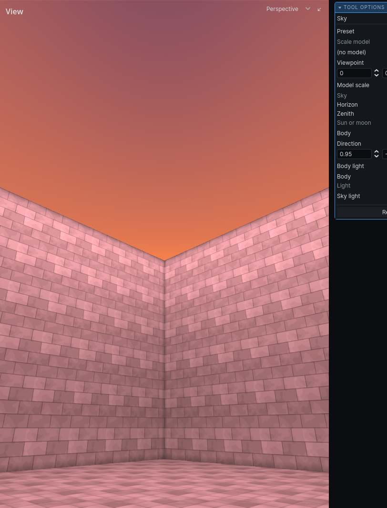

Sky
The sky shows through faces textured sky_*, and daylight comes in through them when you bake. How the sky lights a level is in Lighting.
Press Cmd K for the sky tool. Its panel opens at the bottom right. Every change shows in the 3D view as you make it.

Add a sky
A map with no sky draws its sky faces flat, and lets no daylight in.
- Press
CmdK. - Click Give this map a sky.
- Pick a Preset to start from: a time of day, clear or overcast.
- Adjust the fields.
- Bake to light the level with it. See Lighting.
Settings
| Section | Field | Does |
|---|---|---|
| Scale model | model, …, × | a small model of what stands outside the map, such as a city; × removes it |
| Viewpoint | where in the model this map stands | |
| Model scale | how much smaller the model is than life | |
| Sky | Horizon, Zenith | the colours from the horizon to straight overhead |
| Sun or moon | Body | Sun or Moon; a moon gives a hundredth of a sun's light |
| Direction | which way its light travels | |
| the second Body (a colour) | the colour of its light | |
| Body light | how much light it gives the ground | |
| Light | Sky light | how brightly the open sky lights what it can see |
Hover a field for more. Body light and Sky light show only after the next bake.
Hammerite draws the sky as its gradient and nothing in it. Clouds, a sun's disc, the weather are your game's: it adds fields of its own below these, and draws them.
Remove the sky takes it away.
Variants
Each variant can have its own sky: the same street at dusk has the day's sky with the sun lower.
- Switch to the variant in the Layers panel. See Layers.
- In the sky tool, click Give variant its own sky. It starts as a copy of the sky it had.
- Edit it.
Use the sky it sits under again drops the variant's own sky.
Note: Adding or removing the sky, and changes to its fields, preset and model, are not in the undo history. Giving a variant its own sky, and dropping it, are.